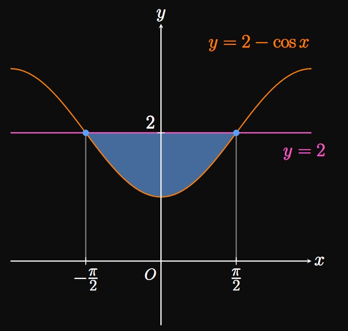
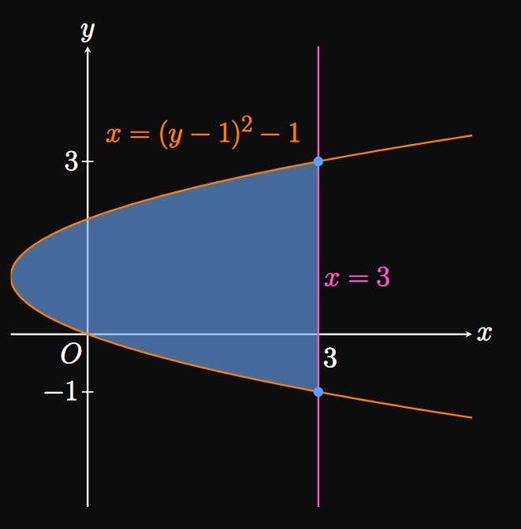
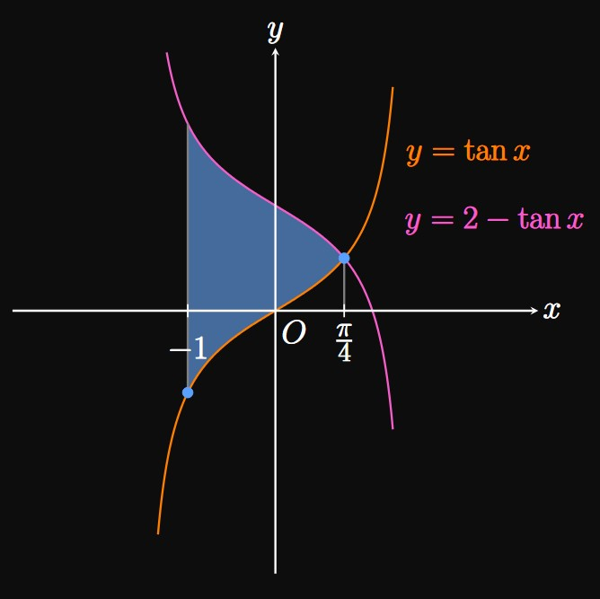
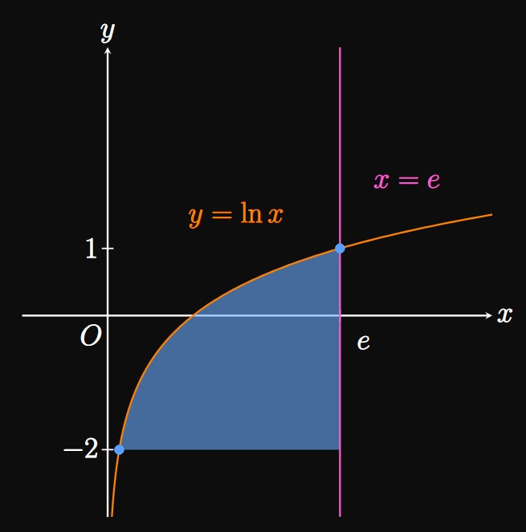
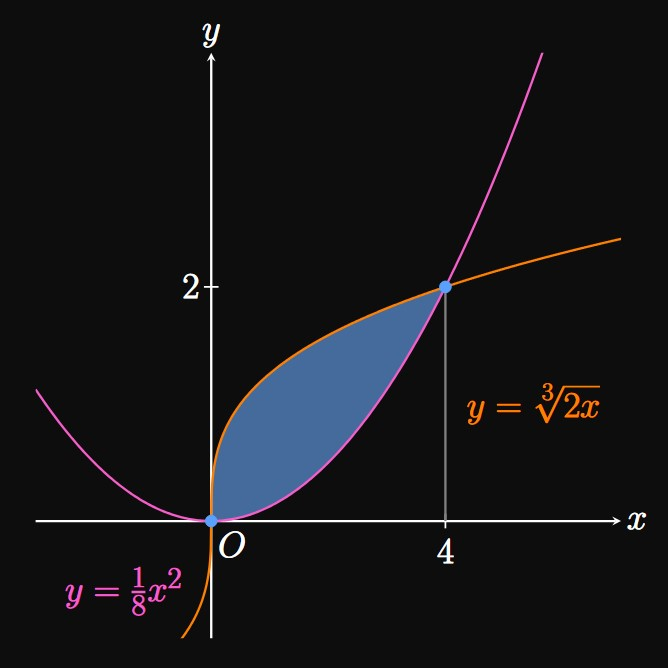
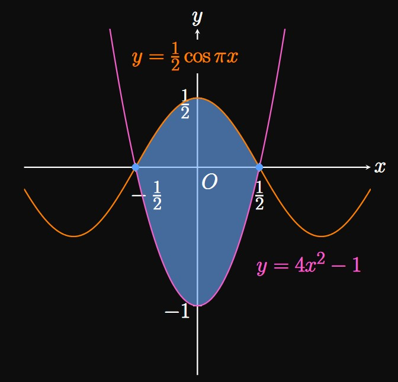
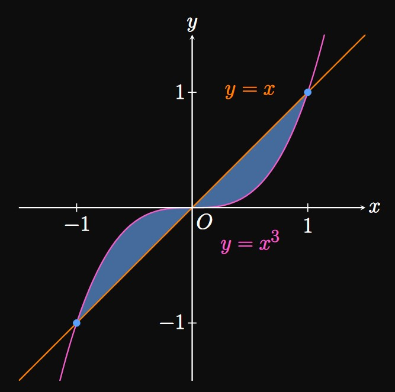
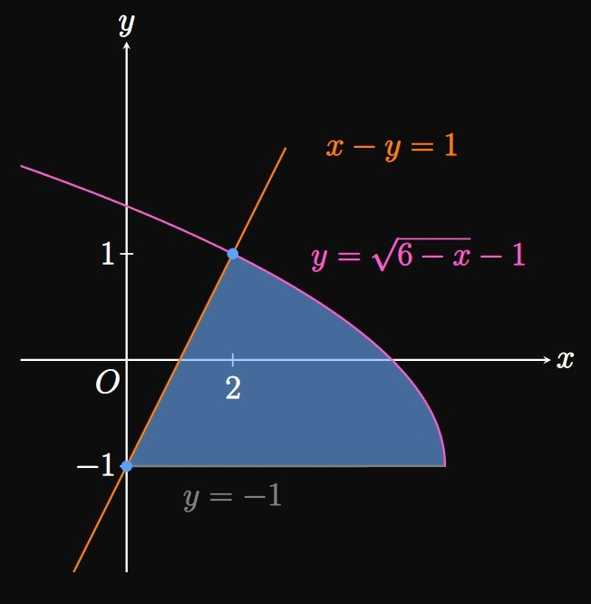
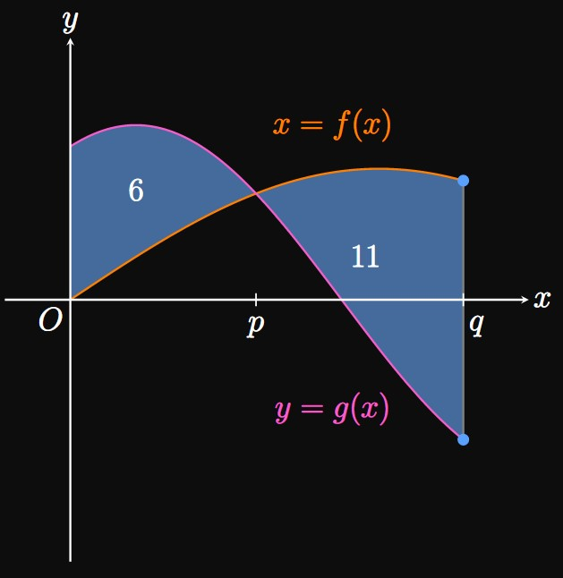
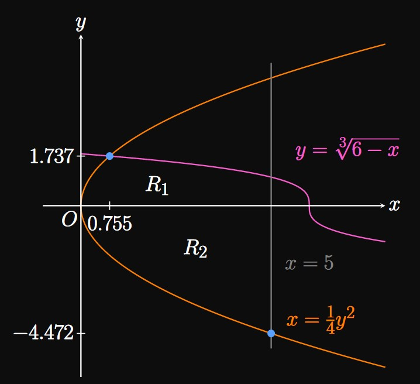

Suppose \(f(x) \geq g(x)\) for all \(x\) in \([a, b].\)
Use an integral to express the area bounded by \(y = f(x),\) \(y = g(x),\)
and the lines \(x = a\) and \(x = b.\)
SOLUTION
We integrate the top function minus the bottom function from \(x = a\) to \(x = b.\)
The area is
\begin{equation*}
A = \int_a^b [f(x) - g(x)] \di x \pd
\end{equation*}
EXERCISE 2
Let \(f(y) \geq g(y)\) for all \(y\) in \([c, d].\)
What is the area bounded by \(x = f(y),\) \(x = g(y),\)
and the lines \(y = c\) and \(y = d \ques\)
SOLUTION
We integrate the right function minus the left function from \(y = c\) to \(y = d.\)
We integrate with respect to \(y \col\)
\begin{equation*}
A = \int_c^d [f(y) - g(y)] \di y \pd
\end{equation*}
EXERCISE 3
Let region \(R\) be bounded by the parabola \(y = x^2,\) the line \(y = x,\)
the \(x\)-axis, and the \(y\)-axis (Figure 12).
Note that the two functions intersect at the origin and \((1, 1).\)
In terms of \(x,\) write an integral whose value gives the area of region \(R.\)
Find an integral in terms of \(y\) that gives the area of \(R.\)
Evaluate the integrals in parts (a)
and (b).
What do you notice?
SOLUTION
We note that \(x \geq x^2\) for all \(x\) in \([0, 1].\)
Accordingly, we integrate the top function \(x\) minus the bottom function \(x^2\) from \(x = 0\) to \(x = 1 \col\)
\[A = \int_0^1 \par{x - x^2} \di x = \par{\tfrac{1}{2} x^2 - \tfrac{1}{3} x^3} \intEval_0^1 = \boxed{\tfrac{1}{6}}\]
To integrate with \(y,\) we need to ensure that \(R\) is bounded by the same two functions over the entire region.
The right boundary is \(y = x^2\) and the left boundary is \(x;\)
these two functions cover the entire region \(R.\)
We need both functions in terms of \(y,\)
so we write \(y = x^2\) as \(x = \sqrt y.\)
Then we integrate from \(y = 0\) to \(y = 1\)
(integrating the right function minus the left function):
\[
\ba
A &= \int_0^1 \par{\sqrt y - y} \di y \nl
&= \par{\tfrac{2}{3} y^{3/2} - \tfrac{1}{2} y^2} \intEval_0^1 \nl
&= \tfrac{2}{3} - \tfrac{1}{2} = \boxed{\tfrac{1}{6}}
\ea
\]
The answers in both parts are the same.
This shows that we have the freedom to choose to integrate using either \(x\) or \(y,\)
as we should obtain the same result.
But sometimes one method is easier than another,
so it's important to remain flexible.
EXERCISE 4
For
\(y = x^2 \cmaa y = 4 \cmaa x = 0\)
calculate the area bounded by the graphs.
SOLUTION
This region is in the first quadrant,
bounded above by the line \(y = 4\) and below by the parabola \(y = x^2.\)
The two functions intersect at \((2, 4).\)
It is easy to integrate either with \(x\) or \(y.\)
If we integrate with \(x,\)
then the integrand is the top function \((y = 4)\)
minus the bottom function \((y = x^2)\) from \(x = 0\) to \(x = 2\)—namely,
\[A = \int_0^{2} \par{4 - x^2} \di x \pd\]
With \(y,\) we rewrite \(y = x^2\) as \(x = \sqrt y.\)
We integrate the right-bounding function \(x = \sqrt y\)
minus the left-bounding function, the line \(x = 0.\)
This gives
\[A = \int_0^4 \par{\sqrt y - 0} \di y \pd\]
Either setup confers the answer of \(\boxed{16/3}.\)
EXERCISE 5
For
\(y = 2 \sqrt x \cmaa y = x\)
calculate the area bounded by the graphs.
SOLUTION
This region is in the first quadrant,
bounded above by \(y = 2 \sqrt x\) and below by the line \(y = x.\)
The two functions intersect at \((4, 4)\) if we solve \(2 \sqrt x = x.\)
Integrals with \(x\) or \(y\) are easy to write.
If we integrate with \(x,\)
then the integrand is the top function \((y = 2 \sqrt x)\)
minus the bottom function \((y = x)\) from \(x = 0\) to \(x = 4\)—that is,
\[A = \int_0^{4} \par{2 \sqrt x - x} \di x \pd\]
If we integrate with \(y,\) then we rewrite \(y = 2 \sqrt x\) as \(x = (y/2)^2.\)
We integrate, from \(y = 0\) to \(y = 4,\) the right-bounding function \(x = y\)
minus the left-bounding function \(x = (y/2)^2.\)
This gives
\[A = \int_0^4 \parbr{y - \par{\tfrac{y}{2}}^2} \di y \pd\]
Either method gives the answer of \(\boxed{8/3}.\)
EXERCISE 6
For
\(y = e^x \cmaa y = e^{-x} \cmaa x = 0 \cmaa x = 1\)
calculate the area bounded by the graphs.
SOLUTION
We observe that the area is bounded above by \(y = e^x,\)
below by \(y = e^{-x},\) and right by \(x = 1.\)
It is easiest to integrate with \(x\) because the upper and lower boundaries do not change
anywhere in the region.
The region goes from \(x = 0\) to \(x = 1,\) so the area is
\[
\ba
A &= \int_0^1 \par{e^x - e^{-x}} \di x \nl
&= \par{e^x + e^{-x}} \intEval_0^1 \nl
&= \boxed{e + \tfrac{1}{e} - 2} \approx 1.086 \pd
\ea
\]
EXERCISE 7
For
\(\ds y = 2 \cos x \cmaa y = 1\)
calculate the area bounded by the graphs.
SOLUTION
The bounded region is in the first and second quadrants,
with an upper boundary of \(y = 2 \cos x\)
and lower boundary of \(y = 1.\)
The two functions intersect at the points \((-\pi/3, 1)\) and \((\pi/3, 1).\)
If we choose to integrate with \(x,\) then our integral is
\[A = \int_{-\pi/3}^{\pi/3} (2 \cos x - 1) \di x \pd\]
Or we could realize that the region is symmetric about the \(y\)-axis, so the area is
twice the area of one region:
\[A = 2 \int_0^{\pi/3} (2 \cos x - 1) \di x \pd\]
Evaluating the integral gives
\[2 \par{2 \sin x - x} \intEval_0^{\pi/3} = \boxed{2 \sqrt 3 - \tfrac{2}{3} \pi} \approx 1.368 \pd\]
It is important to recognize symmetries because they permit easier problem-solving.
Choosing to integrate with \(y\) is very difficult, so we omit that setup.
EXERCISE 8
For
\(\ds y = 2 - \cos x \cmaa y = 2\)
calculate the area bounded by the graphs.
SOLUTION

The bounded region is in the first and second quadrants,
with an upper boundary of \(y = 2\)
and lower boundary of \(y = 2 - \cos x.\)
The two functions intersect at the points \((-\pi/2, 2)\) and \((\pi/2, 2).\)
It is easiest to integrate with \(x;\) doing so shows
\[
\ba
A &= \int_{-\pi/2}^{\pi/2} [2 - (2 - \cos x)] \di x \nl
&= \int_{-\pi/2}^{\pi/2} \cos x \di x \nl
&= 2 \int_0^{\pi/2} \cos x \di x \cma
\ea
\]
where the last step is true because \(\cos x\) is even.
By the Fundamental Theorem of Calculus,
\[
\ba
A &= 2 \sin x \intEval_0^{\pi/2} \nl
&= 2 \par{\sin \frac{\pi}{2} - \sin 0} \nl
&= \boxed 2
\ea
\]
EXERCISE 9
For
\(\ds x = (y - 1)^2 - 1 \cmaa x = 3\)
calculate the area bounded by the graphs.
SOLUTION

The graphs intersect at \((3, -1)\) and \((3, 3).\)
The right boundary is \(x = 3,\)
and the left boundary is \(x = (y - 1)^2 - 1.\)
It is easiest to integrate with \(y.\)
Because the region spans from \(y = -1\) to \(y = 3,\)
its area is
\[
\ba
A &= \int_{-1}^3 \par{3 - [(y - 1)^2 - 1]} \di y \nl
&= \int_{-1}^3 \parbr{4 - (y - 1)^2} \di y \nl
&= \int_{-1}^3 \par{3 + 2y - y^2} \di y \nl
&= \par{3y + y^2 - \tfrac{1}{3} y^3} \intEval_{-1}^3 \nl
&= (9) - \par{-\tfrac{5}{3}} \nl
&= \boxed{\tfrac{32}{3}}
\ea
\]
EXERCISE 10
For
\(\ds y = \tan x \cmaa y = 2 - \tan x \cmaa -1 \leq x \leq 1\)
calculate the area bounded by the graphs.
SOLUTION

Since \(2 - \tan x \geq \tan x\) on \([-1, 1],\)
the region is bounded above by \(y = 2 - \tan x\)
and below by \(y = \tan x.\)
Both curves intersect when
\[2 - \tan x = \tan x \implies \tan x = 1 \implies x = \frac{\pi}{4} \pd\]
Integrating with \(x,\)
we find the area to be
\[
\ba
A &= \int_{-1}^{\pi/4} [(2 - \tan x) - \tan x] \di x \nl
&= \int_{-1}^{\pi/4} (2 - 2 \tan x) \di x \nl
&= \par{2x - 2 \ln \abs{\sec x}} \intEval_{-1}^{\pi/4} \nl
&= 2 \parbr{\frac{\pi}{4} - (-1)} - 2 \parbr{\ln \par{\sec \frac{\pi}{4}} - \ln \par{\sec(-1)}} \nl
&= \boxed{\frac{\pi}{2} + 2 - 2 \ln \parbr{\cos(-1) \sqrt 2}} \approx 4.109 \pd
\ea
\]
EXERCISE 11
For
\(\ds y = \ln x \cmaa x = e \cmaa y = -2\)
calculate the area bounded by the graphs.
SOLUTION

While it's possible to integrate with \(x,\)
the setup would be
\[A = \int_{e^{-2}}^e (\ln x + 2) \di x \pd\]
We cannot yet antidifferentiate \(\ln x;\)
we will learn how in Section
6.1.
Instead, we can integrate with \(y \col\)
The region's right boundary is \(x = e,\)
and its left boundary is \(y = \ln x\) \(\iffArrow x = e^y.\)
So the area is
\[
\ba
A &= \int_{-2}^1 (e - e^y) \di y \nl
&= \par{ey - e^y} \intEval_{-2}^1 \nl
&= (e - e) - \par{-2e - e^{-2}} \nl
&= \boxed{2e + e^{-2}}
\ea
\]
EXERCISE 12
For
\(\ds y = \tfrac{1}{8} x^2 \cmaa y = \sqrt[3]{2x}\)
calculate the area bounded by the graphs.
SOLUTION

The region is bounded above by \(y = \sqrt[3]{2x}\) and below by \(y = \tfrac{1}{8} x^2.\)
Both curves intersect when
\[
\ba
\sqrt[3]{2x} &= \tfrac{1}{8} x^2 \nl
2x &= \frac{1}{8^3} x^6 \nl
x^5 &= 1024 \nl
\implies x &= \sqrt[5]{2^{10}} = 4 \pd
\ea
\]
Hence, the area is
\[
\ba
\int_0^4 \par{\sqrt[3]{2x} - \tfrac{1}{8} x^2} \di x
&= \int_0^4 \par{2^{1/3} \, x^{1/3} - \tfrac{1}{8} x^2} \di x \nl
&= \par{2^{1/3} \tfrac{3}{4} x^{4/3} - \tfrac{1}{24} x^3} \intEval_0^4 \nl
&= \parbr{2^{1/3} \tfrac{3}{4} (4)^{4/3} - \tfrac{1}{24} (4)^3} - 0 \nl
&= 3 \par{2^{1/3}} 4^{1/3} - \tfrac{8}{3} \nl
&= 3 \sqrt[3] 8 - \tfrac{8}{3} \nl
&= 6 - \tfrac{8}{3} = \boxed{\tfrac{10}{3}}
\ea
\]
EXERCISE 13
For
\(\ds y = \tfrac{1}{2} \cos \pi x \cmaa y = 4x^2 - 1\)
calculate the area bounded by the graphs.
SOLUTION

Note that both curves have roots at \(x = -1/2\) and \(x = 1/2.\)
The region's upper boundary is \(y = \tfrac{1}{2} \cos \pi x,\)
and its lower boundary is \(y = 4x^2 - 1.\)
Accordingly, the area is
\[
\baat{2}
A &= \int_{-1/2}^{1/2} \parbr{\tfrac{1}{2} \cos \pi x - \par{4x^2 - 1}} \di x \nl
&= 2 \int_0^{1/2} \parbr{\tfrac{1}{2} \cos \pi x - \par{4x^2 - 1}} \di x \comment{\text{since integrand is even}} \nl
&= 2 \int_0^{1/2} \par{\tfrac{1}{2} \cos \pi x + 1 - 4x^2} \di x \nl
&= \par{\frac{1}{\pi} \sin \pi x + 2x - \tfrac{8}{3} x^3} \intEval_0^{1/2} \nl
&= \par{\frac{1}{\pi} \sin \frac{\pi}{2} + 1 - \tfrac{1}{3}} - 0 \nl
&= \boxed{\frac{1}{\pi} + \frac{2}{3}}
\eaat
\]
EXERCISE 14
For
\(\ds y = x^3 \cmaa y = x\)
calculate the area bounded by the graphs.
SOLUTION

The graphs intersect at \((-1, -1)\) and \((1, 1).\)
The entire enclosed area lies in the first and third quadrants.
Because \(x \gt x^3\) for \(0 \leq x \leq 1,\)
the area in the first quadrant is
\[
\ba
A_1 &= \int_0^1 \par{x - x^3} \di x \nl
&= \par{\tfrac{1}{2} x^2 - \tfrac{1}{4} x^4} \intEval_0^1 \nl
&= \par{\tfrac{1}{2} - \tfrac{1}{4}} - 0 \nl
&= \tfrac{1}{4} \pd
\ea
\]
Likewise, \(x^3 \gt x\) for \(-1 \leq x \leq 0,\)
so the area in the third quadrant is
\[
\ba
A_3 &= \int_{-1}^0 \par{x^3 - x} \di x \nl
&= \par{\tfrac{1}{4} x^4 - \tfrac{1}{2} x^2} \intEval_{-1}^0 \nl
&= 0 - \par{\tfrac{1}{4} - \tfrac{1}{2}} \nl
&= \tfrac{1}{4} \pd
\ea
\]
Hence, the total area is
\[A = A_1 + A_3 = \boxed{\tfrac{1}{2}}\]
Note:
This result is the same value as
\[A = \int_{-1}^1 \abs{x - x^3} \di x \pd\]
EXERCISE 15
For
\(\ds y = \sqrt x \cmaa x + y = 2 \cmaa y = 0\)
calculate the area bounded by the graphs.
SOLUTION
Drawing a sketch, we observe that the area
is bounded left by \(y = \sqrt x,\) right by \(x + y = 2,\)
and below by the \(x\)-axis (or the line \(y = 0\)).
The former two equations intersect at the point \((1, 1).\)
It is easiest to integrate with \(y\) because the region is bounded by the same side boundaries,
whereas the upper boundary switches from \(y = \sqrt x\) to \(x + y = 2\)
as we cross \(x = 1.\)
In committing to \(y,\) we express all quantities in terms of \(y.\)
We have
\[x = 2 - y \and x = y^2 \pd\]
The right function is \(x = 2 - y\) and the left function is \(x = y^2.\)
The region goes from \(y = 0\) to \(y = 1,\) so our integral is
\[A = \int_0^1 \parbr{(2 - y) - y^2} \di y \pd\]
If we instead choose to integrate with \(x,\) then we split the region at \(x = 1\)
and sum up the areas of the subregions.
The subregion left of \(x = 1\) is bounded above by \(y = \sqrt x,\)
while the right subregion is bounded above by \(y = 2 - x.\)
So the sum of the subregions' areas is
\[A = \int_0^1 \sqrt x \di x + \int_1^2 (2 - x) \di x \pd\]
[We also could have written the integrands as \(\sqrt x - 0\) and \((2 - x) - 0\)
since the lower boundary function is \(y = 0.\)]
Both integral setups give the answer \(\boxed{7/6}.\)
EXERCISE 16
For
\(\ds x - y = 1 \cmaa y = \sqrt{6 - x} - 1 \cmaa y = -1\)
calculate the area bounded by the graphs.
SOLUTION

It is possible to integrate with either \(x\) or \(y,\)
but integrating with \(x\) requires two integrals, with a split at \(x = 2.\)
Instead, we express all quantities in terms of \(y \col\)
The left boundary is \(x = y + 1,\) and the right boundary is \(x = 6 - (y + 1)^2,\) \(y \geq -1.\)
Both graphs intersect at \(y = 1,\)
so the region spans from \(y = -1\) to \(y = 1.\)
Accordingly, the area is
\[
\ba
A &= \int_{-1}^1 \parbr{6 - (y + 1)^2 - (y + 1)} \di y \nl
&= \int_{-1}^1 \par{4 - 3y - y^2} \di y \nl
&= \par{4y - \tfrac{3}{2} y^2 - \tfrac{1}{3} y^3} \intEval_{-1}^1 \nl
&= \par{4 - \tfrac{3}{2} - \tfrac{1}{3}} - \par{-4 - \tfrac{3}{2} + \tfrac{1}{3}} \nl
&= \boxed{\tfrac{22}{3}}
\ea
\]
EXERCISE 17

Figure 13 shows the graphs of \(y = f(x)\) and \(y = g(x)\)
and the areas of the regions they enclose.
Find the values of the following integrals.
\(\ds \int_0^p [g(x) - f(x)] \di x\)
\(\ds \int_p^q [f(x) - g(x)] \di x\)
\(\ds \int_0^q \abs{f(x) - g(x)} \di x\)
\(\ds \int_0^q [f(x) - g(x)] \di x\)
SOLUTION
The area of the region enclosed by \(f\) and \(g\) on \([0, p]\) is \(6\)
(from the figure).
Since \(g(x) \geq f(x)\) on this interval, we have
\[\int_0^p [g(x) - f(x)] \di x = \boxed 6\]
The area of the region enclosed by \(f\) and \(g\) on \([p, q]\) is \(11\)
(from the figure).
Because \(f(x) \geq g(x)\) on this interval,
\[\int_p^q [f(x) - g(x)] \di x = \boxed{11}\]
From \(x = 0\) to \(x = q,\)
the total area enclosed by \(f\) and \(g\) is \(6 + 11 = 17.\)
Consequently,
\[\int_0^q \abs{f(x) - g(x)} \di x = \boxed{17}\]
We see
\[
\ba
\int_0^q [f(x) - g(x)] \di x &=
\int_0^p [f(x) - g(x)] \di x + \int_p^q [f(x) - g(x)] \di x \nl
&= -6 + 11 \nl
&= \boxed 5
\ea
\]
EXERCISE 18
Graph the functions \(f(x) = \tfrac{1}{3} x^3 - 4 \sin x\)
and \(g(x) = x^2 - 4.\)
Calculate the total area enclosed by the graphs over \(-2 \leq x \leq 2.\)
SOLUTION
The curves intersect when \(x = -2.096,\) \(x = 0.990,\) and \(x = 2.362.\)
Note that \(f(x) \geq g(x)\) on \([-2.096, 0.990]\) and \(g(x) \geq f(x)\) on \([0.990, 2.362].\)
Over \(-2 \leq x \leq 2,\) the area enclosed is therefore
\[
\ba
A &= \int_{-2}^2 \abs{f(x) - g(x)} \di x \nl
&= \int_{-2}^{0.990} \parbr{f(x) - g(x)} \di x + \int_{0.990}^2 \parbr{g(x) - f(x)} \di x \nl
&\approx \boxed{12.485}
\ea
\]
EXERCISE 19
What is the total area enclosed by the graphs of \(f(x) = x - 2\) and \(g(x) = x e^{-x},\)
the \(y\)-axis, and the line \(x = 4 \ques\)
SOLUTION
The curves intersect when \(x = -1.060\) and \(x = 2.239.\)
Note that \(g(x) \geq f(x)\) on \([-1.060, 2.239]\) and \(f(x) \geq g(x)\) on \([2.239, \infty).\)
Over \(0 \leq x \leq 4,\) the total area closed is therefore
\[
\ba
A &= \int_0^4 \abs{f(x) - g(x)} \di x \nl
&= \int_0^{2.239} \parbr{g(x) - f(x)} \di x + \int_{2.239}^4 \parbr{f(x) - g(x)} \di x \nl
&\approx \boxed{4.344}
\ea
\]
EXERCISE 20
Using a calculator, calculate the area of the region bounded below by \(y = \sqrt[3]{6 - x}\)
and on the sides by \(x = \tfrac{1}{4} y^2\) and \(x = 5.\)
SOLUTION

This problem requires creativity.
The curves \(y = \sqrt[3]{6 - x}\) and \(x = \tfrac{1}{4}y^2\)
intersect at \((0.755, 1.737).\)
One method is to split the region into two subregions, \(R_1\) and \(R_2,\)
as in the figure.
Note that \(y = \sqrt[3]{6 - x}\) \(\iffArrow x = 6 - y^3.\)
By integrating with \(y,\)
the area of \(R_1\) is
\[
\ba
A_1 &= \int_0^{1.737} \parbr{(6 - y^3) - \tfrac{1}{4} y^2} \di y \nl
&\approx 7.709 \pd
\ea
\]
The boundary functions change, so the area of \(R_2\) is
\[
\ba
A_2 &= \int_{-4.472}^0 \par{5 - \tfrac{1}{4} y^2} \di y \nl
&\approx 14.907 \pd
\ea
\]
The total area is therefore
\[A_1 + A_2 \approx \boxed{22.617}\]
EXERCISE 21
A line in the first quadrant intersects
the graph of \(y = \sqrt x\) at \(x = 4\)
with an angle of \(90 \degree.\)
Calculate the area of the region bounded between these curves and the \(x\)-axis.
SOLUTION
The slope to \(y = \sqrt x\) when \(x = 4\) is given by
\[\deriv{}{x} \sqrt x \intEval_{x = 4} = \frac{1}{2 \sqrt 4} = \frac{1}{4} \pd\]
Thus, the line perpendicular to the curve has slope \(-4.\)
An equation of this line is therefore
\[y - \sqrt 4 = -4(x - 4) \or y = -4x + 18 \pd\]
From \(x = 0\) to \(x = 4,\) the region is
bounded above by \(y = \sqrt x\) and below by the \(x\)-axis.
This area is
\[\int_0^4 \sqrt x \di x = \tfrac{2}{3} x^{3/2} \intEval_0^4 = \tfrac{2}{3} (8) = \tfrac{16}{3} \pd\]
Additionally, the region bounded above by the line \(y = -4x + 18,\)
below by the \(x\)-axis, and left by the line \(x = 4\) is a triangle
of height \(2\) and base \(1/2.\)
The triangle's area is therefore \(\tfrac{1}{2} \par{2 \cdot \tfrac{1}{2}}\)
\(= \tfrac{1}{2}.\)
Hence, the total area of the region is
\[\tfrac{16}{3} + \tfrac{1}{2} = \boxed{\tfrac{35}{6}}\]